Cu orguyo y hopi placer Go Cultura ta presenta nos "Artista di Siman" pa e siman aki. Aura Maybelline Arends-Croes, un gran tesoro Arubano cu a brinda por lo menos 50 aña di su bida na forma masha hopi di nos ciudadanonan cu su amplio conocemento y guia musical. 50 aña di su carera musical, educando, inspirando y preservando nos cultura musical bao di nos muchanan, hobennan y adultonan.
Un dama cu semper a coopera y aporta cu asina hopi artista, evento y proyecto, pasobra p'e ta sumamente importante pa enrikece y eleva nos comunidad y vooral nos hobennan cu loke p'e ta un amor grandi: Musica.
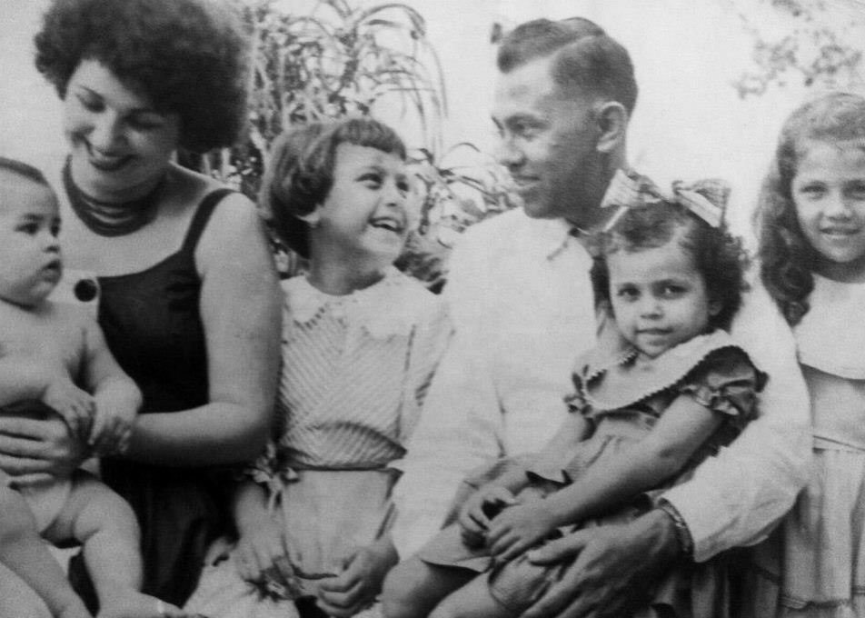
Infancia y hubentud
Aura Maybelline Arends-Croes, "Juffrouw Maybe", of pa hopi djis "Maybe", a nace na Aruba dia 27 di Maart di aña 1945. Su mayornan, Sr. Frans Croes y Sra. Aura Croes (d.f.m.), a ripara cu Maybelline tabata tin habilidadnan creativo y musical desde un edad hopi chikito.
Maybelline a bishita Maria College for di klas 1 te cu 7. Despues el a sigui pa Colegio Arubano, HBS 1 te cu 5, y na 1963 el a ricibi su diploma HBS-A na Colegio Arubano.
Ora a yega momento pa e dicidi ki rumbo e lo tuma cu su estudio den exterior, Maybelline a scohe pa loke e tabata sa cu tabata su amor y pasion: Musica. Asina, na aña 1963 el a muda pa Hulanda y a cuminsa na Muziek Conservatorium na Hilversum. Na aña 1968 el a gradua y a ricibi su diploma di Muziek Onderwijs akte-A.
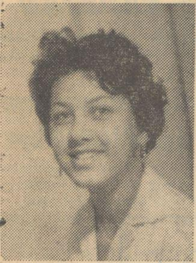
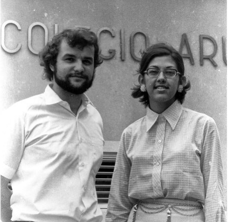
Bida como docente y educador musical
Desde September 1968 Maybelline a labora riba nos isla como docente di musica. Pa Arubaanse Muziekschool tur atardi den 5 districto desde 1968 te cu 1973. Pa Colegio Arubano desde September 1968 te cu September 2008. Pa Academia Pedagogico Arubano desde September 1968 te cu September 2008 (na 1990 e academia aki a bira I.P.A.).
Appart di tur esaki, Maybelline a forma parti di varios comision importante di enseñansa y a duna varios workshop y curso di musica.
Maybelline ta un di e musiconan y artistanan local cu mas tempo boluntario a dedica na masha hopi causa y proyecto. Hopi di nos por corda e famoso "Star Revue" di Colegio Arubano cu a wordo organisa y dirigi pa varios aña door di Maybelline. Esaki a sirbi como plataforma importante pa hopi hoben talentoso por a desaroya y expone nan talento.
"Paranda di Pasco" ta otro proyecto cu el a haci pa hopi aña, cantando pa nos grandinan na e casnan di anciano cu e studiantenan di A.P.A. y I.P.A.
E ta masha conoci como dirigente di diferente coro pa varios celebracion special. Ora cu nos scucha nombernan manera Coro Tutti Frutti (activo desde 1968) y coro Mélange (activo desde 1994) nos sa cu Maybelline ta serca y semper nos ta disfruta inmensamente di nan presentacionnan. Nos por corda tambe coronan manera entre otro "The Sunrise", "The Young Voices", "Los tres Cochinitos", "Grupo Starlite", "Grupo Crystal", "Coro Bereya", "Grupo Fuga" y "TeenAngels".
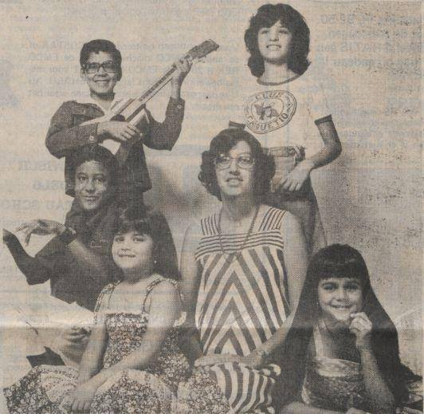
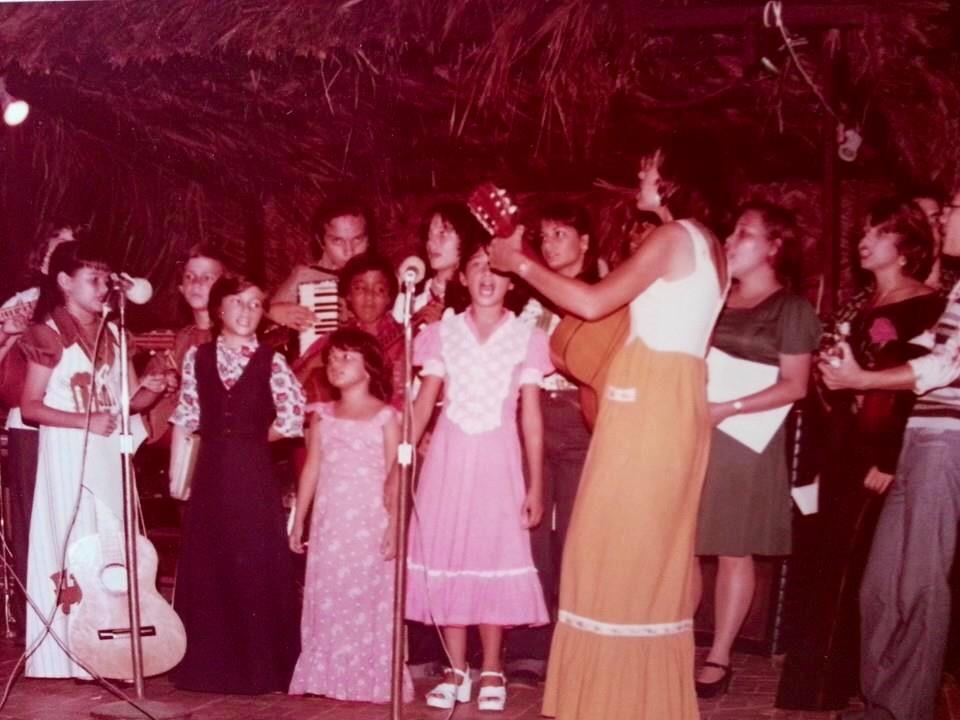
Banda di esaki, Maybelline semper a yuda y prepara coro pa compaña solistanan cu ta participa na diferente songfestivalnan importante di nos isla manera OTI Festival, Festival Voz-i-Landia Escolar, Festival Voz Hubenil, Festival Voz di Oro, Festival Voz Supremo, Festival di Tumberito, Festival Hubenil di Merengue y mucho mas.

Inauguracion Himno Nacional di Aruba
Pa medio di un referendum na aña 1975, e pueblo Arubano a duna e gobierno insular, encabesá pa señor Gilberto F. "Betico" Croes, e mandato special pa e traha riba realisacion di un "Status Aparte" pa Aruba. Den luz di e desaroyonan nobo aki, e gobierno insular a sinti e necesidad pa cuminsa prepara e caminda pa yega na tal meta. E prome paso den e direccion aki tabata pa percura pa Aruba tin, ademas di su escudo, tambe su propio himno nacional y su propio bandera.
Dia 21 di januari 1976, gobierno insular di Aruba a instala un comision di seis ciudadano prominente y a-politico di nos comunidad, cu e tarea pa nan conseha e gobierno di Aruba pa obtene un himno nacional pa Aruba. Maybelline a forma parti di e comision aki.
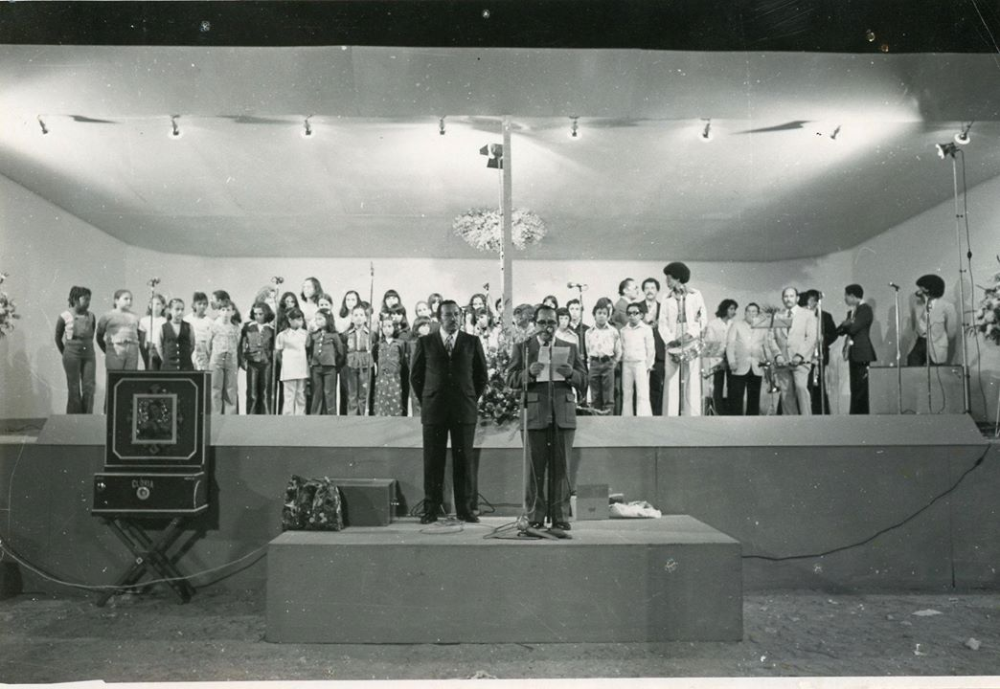
E comision a somete su recomendacion na Gobierno Insular riba 26 di februari 1976 y riba 16 di Maart 1976 Parlamento di Aruba a aproba "Aruba Dushi Tera" como himno oficial di Aruba. Gobierno Insular di Aruba a organisa un acto memorabel oficial den Wilhelmina Stadion riba 18 di Maart 1976, pa e proclamacion oficial di nos himno y tambe di nos bandera. Den presencia di un inmenso multitud di ciudadano presente, "Aruba Dushi Tera" a resona pa di promer biaha oficialmente como himno nacional di Aruba, interpreta pa e voznan conmevodor di e miembronan hubenil di coro "Tutti Frutti" bao direccion di Maybelline, acompaña pa e orkesta harmonico, dirigi pa e conocido musico Joy Kock.
Obranan musical
Amor di Kibaima
E obra musical "Amor di Kibaima", un leyenda di Hubert "Lio" Booi, a nace na aña 1969/1970 na ocasion di e celebracion di e segundo lustro di Colegio Arubano. Studiantenan di Kweekschool (cu etempo ey ta cay bao di SMOA) a presenta e obra aki como 11 biaha (entre otro na Centro Pro Arte Corsou tambe) cu masha hopi exito, bou direccion artistico di sr. Frans Meewis y direccion musical di sra. Maybelline Arends-Croes.
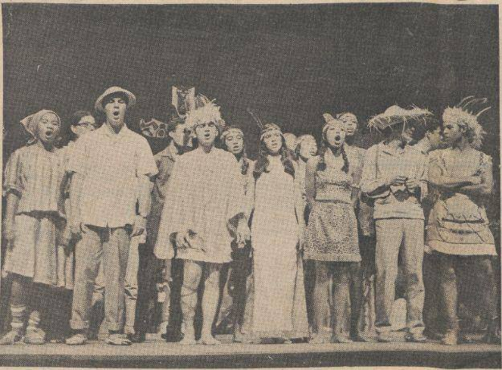
Pesebre Bibo
E obra aki a wordo graba cu TeleAruba den diferente scenario y districto. Hopi di nos por a aprecia esaki varios bes via canal 13.
Magia di Fantasia
Un obra musical y original "Magia di Fantasia" (cuenta di hada) crea door di Lilia Luidens y dedica na Maybelline na October 1996. Alumnonan di Maybelline (Melange, Tutti Frutti y algun ex-studiante di Academia Pedagogico) a presenta e obra aki como 9 biaha den Cas di Cultura, cu subsidio di UNOCA y cooperacion hopi otro colaboradornan, bao direccion artistico di Lilia Luidens y direccion musical di Maybelline.
Maybelline ta productora tambe di varios cassette, cd, buki, programanan di tv y musicals.
Maybelline como compositor
Ya for di aña 1969 Maybelline a cuminsa compone cancion y el a keda semper activo tambe como compositor. Su cancionnan faborito ta esnan pa nos muchanan. Pero tambe el a compone cancionnan pa Pasco, Dia di Mama, cancionnan patriotico, religioso, cancionnan cu mensahenan positivo of tambe cancionnan cu un meta specifico.
E ta colabora tambe cu poëtanan local y ta compone musica pa nan textonan. Un ehempel di esaki ta "Llanto di un mama" cu texto di Hubert Booi. Dos bes el a gana premio di mihor composicion den festival "Voz-i-Landia" cu e cancionnan "Un Soño" riba poësia di Digna Laclé-Herrera y "Mayan tin pan den cas" riba poësia di Hubert Booi. Hopi bes e ta dedica su tempo tambe na traduccion y adaptacion di varios cancion den otro idioma pa nos idioma Papiamento.
Un di esnan mas conoci ta "Man den Man" riba e tema musical "Hand in hand" di weganan Olimpico na Korea 1988. Un otro masha popular ta "Futuro ta di nos", dedica specialmente na studiantenan cu ta bay sigui nan estudio den exterior. Maybelline a compone cancionnan tambe pa e obra musical: Amor di Kibaima (1969), Aventura sin Spera (1973), Un Pasco pa Ma Anina (1974), Malamucha mei anochi (1975), Pachi ta soña (1986) y hopi mas.
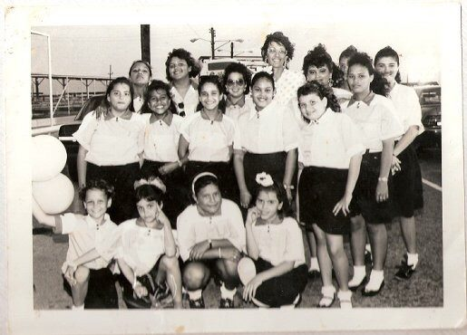
Reconocemento y dedicacion
Varios ta e premio, homenahe, dedicacion y reconocementonan cu Maybelline a ricibi for di numeroso organisacionnan local durante tur e añanan aki.
Un di esnan cu sigur ta bale la pena pa menciona ta esun entrega na dje dia 29 di april 1994. E dia aki Maybelline a ricibi for di man di Gobernador O. Koolman un condecoracion como "Ridder in de Orde van Oranje Nassau". Añadiendo asina, un condecoracion mas na su famia, considerando cu Maybelline su abuelo Sr. Sixto "Mo Tito" Croes, su mama Sra. Aura Croes y su ruman muher Sra. Sandra Croes tambe a ricibi e condecoracion aki pa nan trabao boluntario pa hopi aña largo.
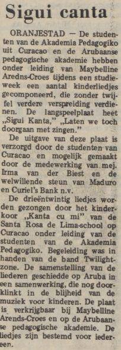
Riba 21 di Maart 2019, durante un celebracion masha ameno, den cual famia y conocirnan tabata presente, Maybelline a ricibi for di man di Minister di Finansa, Asuntonan Economico y Cultura, Sra. Xiomara Maduro, den nomber di Gobierno di Aruba un reconocemento pa su dedicacion di mas cu 50 aña di su carera musical, educando, inspirando, y preservando nos cultura musical bao di nos muchanan, hobennan y adultonan. Hopi ta e personanan cu a reacciona positivamente pa cu esaki, considerando ki significacion un persona asina importante manera Maybelline tin pa nos comunidad.
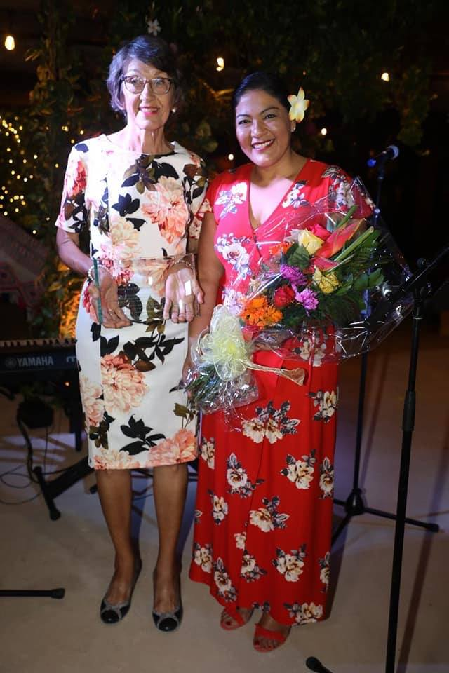
Riba Diasabra 24 di Augustus 2019, Maybelline a wordo nombra como "Pilar Cultural" durante e celebracion Cultural di Centro di Bario Brazil. Un homenahe historico y bon mereci.
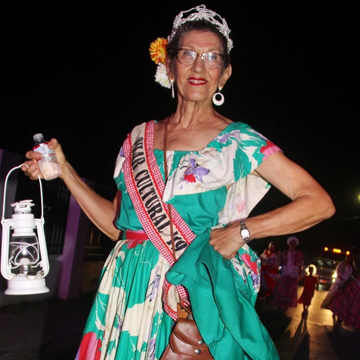
Desde cu Maybelline a baha cu pension na 2008, aun mas ocupa su agenda a bira. Ya cu e ta canta como boluntario cu diferente gruponan di 60+ (e.o. Dakota, Noord y Santa Cruz) durante nan actividadnan social en coneccion cu e programa di IBISA: "Celebra bida, Move pa bo salud". E ta toca y canta tambe cu "Brindis Musical" (un grupo di damas 60+) na varios Casnan di Anciano y otro instancianan riba nos isla.
Su famia
Su tesoronan valioso ta su esposo Karel "Lito" Arends, cu cual el a contrae matrimonio riba 14 di October 1970, y su yiunan stima Carl (2 Nov 1972 – 14 Oct 1973), Igor y Giaira. Tambe su nietonan Kyle, Xennon, Dylan y Dyron.
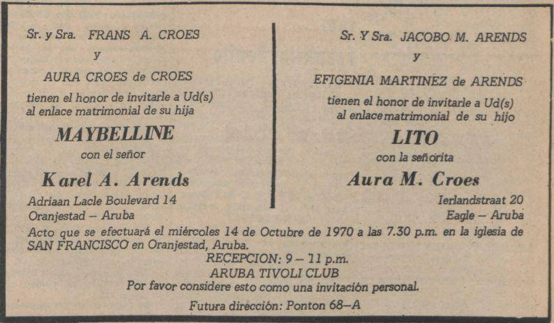
Fundacion Go Cultura ta felicita Maybelline Arends-Croes den nomber di nos tur riba Aruba, pa un trayectoria asina impresionante y inspirativo, pero mas cu tur cos ta gradici Maybelline inmensamente pa a duna asina hopi di su arte y su bida na desaroyo positivo di nos hendenan.
Maybelline ta un ehempel bibo di un ciudadano ehemplar cu semper a usa su fe, determinacion y perseverancia pa logra su metanan. Ohala cu esaki por sirbi como ehempel pa tur nos otro ciudadanonan.
Nos tin cu percura pa su legado keda semper bibo pa tur generacion cu sigui nos, por sa di e baluarte nacional aki y por semper sigui conta y wordo inspira door di su aporte valioso na nos pais.
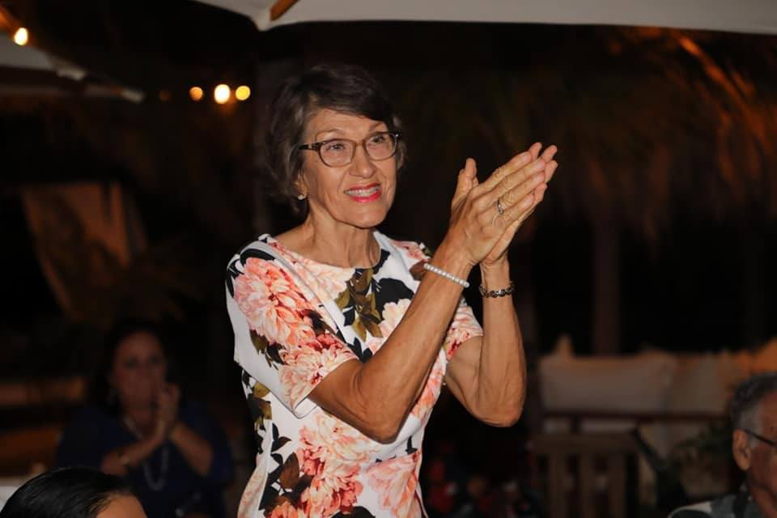
— Fundashon Go Cultura
Publica original riba Facebook, 4 di September 2019 · 92 lectura. Reproduci aki cu gradicimento pa Fundashon Go Cultura pa nan trabou di documentacion di kultura Arubano.